戏曲展演进社区 非遗文化润童心
近年来，传统戏曲等非遗文化正以更贴近大众的形式走进社区生活。乘着 "弘扬中华优秀传统文化，建设中华民族现代文明" 的东风，惠润乡土・风筑新梦实践小队把戏曲体验送到了雨花近华小区居民家门口。7 月 8 日，实践小队赵梓渟、宋薛儿、葛泽宇、徐昕旸等部分成员前往南京市雨花台区近华社区，在雨花新时代文明实践站面向社区儿童及家长开展传统戏曲文化线下体验活动。本次活动以 "戏韵传雅趣、国粹润童心" 为主题，通过戏曲展示、知识科普、手工体验等多个环节，让社区家庭近距离感受传统戏曲艺术的魅力，本次活动共计 20 组家庭参与。
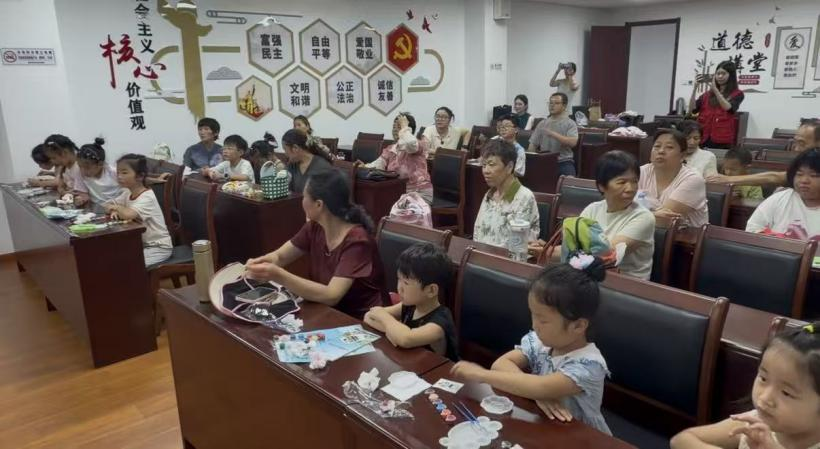
活动现场，实践小队成员依次带来戏曲片段展示与戏曲基础知识科普。讲解人员葛泽宇首先结合红色经典现代戏《沙家浜》选段，向在场儿童介绍戏曲行当的基本划分，讲解生、旦、净、丑四大行当的角色特点与表演风格。
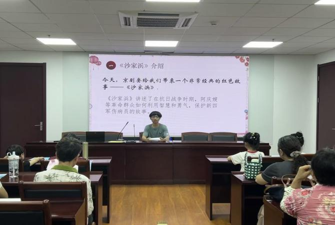
随后，赵梓渟结合昆曲的发展脉络，引出经典昆曲剧目《牡丹亭》选段表演。
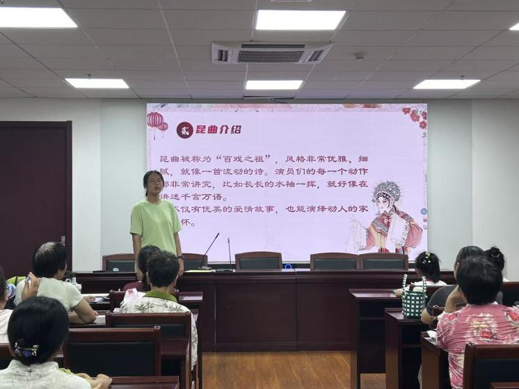
队员队员宋薛儿身着昆曲传统水袖服饰的表演者手持
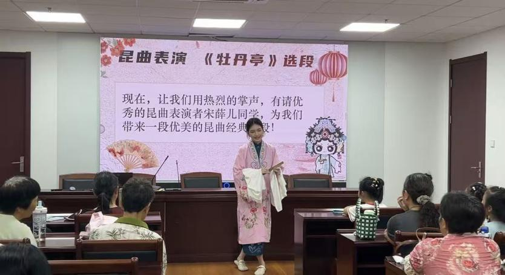
图4 宋薛儿同学表演昆曲经典曲目《牡丹亭》画面
折扇，通过婉转的唱腔与细腻的身段动作，展示昆曲的艺术特色，并与在场的孩子进行近距离互动，邀请儿童模仿简单的戏曲手势。
在皮影戏展示环节，赵梓渟、葛泽宇两名实践队员在幕布后现场演示《西游记》师徒四人皮影道具。随着灯光投射，
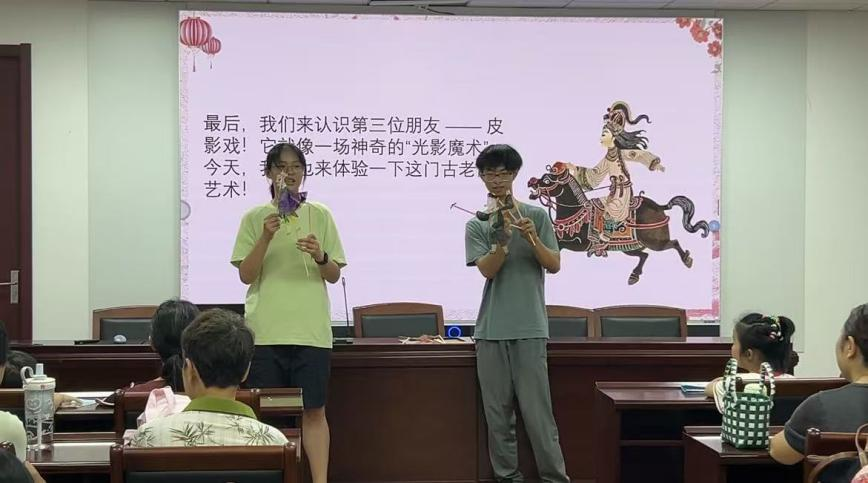
图5 赵梓渟、葛泽宇两位同学展示皮影戏《西游记》
孙悟空、唐僧、猪八戒、沙和尚四个皮影形象依次登场，配合台词与动作，演绎简短的取经故事片段。动态化的表演形式吸引在场儿童纷纷上前围观，不少孩子认真仔细观察皮影道具的构造与操作方式。
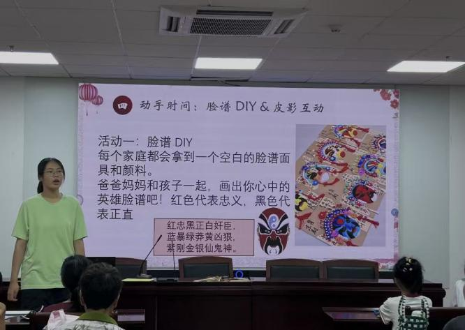
演示环节结束后，活动现场设置脸谱手绘与皮影戏实操两大体验区域。在脸谱手绘区，工作人员为每组家庭发放空
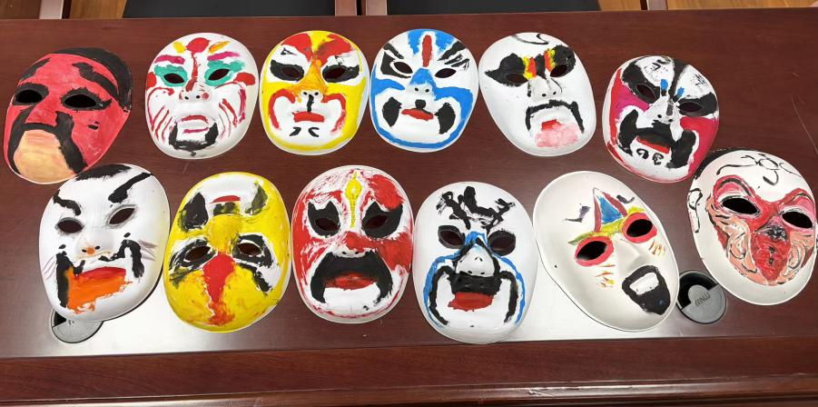
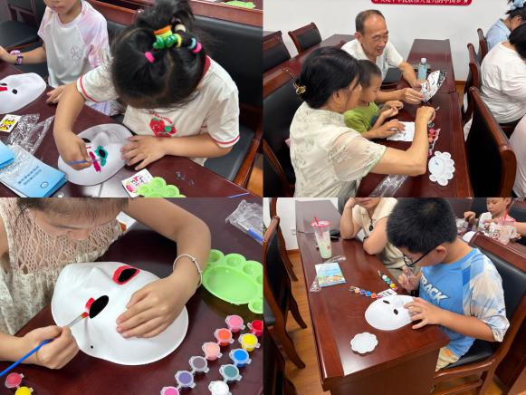
图7 小朋友们创作脸谱画面
白脸谱模具、颜料与画笔，讲解戏曲脸谱中不同颜色所代表的人物性格含义，如红色象征忠勇、黑色代表正直、白色寓意奸诈等。儿童与家长共同动手创作，在脸谱模具上描绘色
图8 所有小朋友脸谱作品完成展示
彩与图案，完成属于自己的戏曲脸谱作品。
在皮影戏实操体验区，实践队员指导儿童手持皮影操纵杆，尝试操控皮影人物做出行走、转身等简单动作。部分儿童还自发组队，配合西游记主题曲的旋律，即兴演绎简短的皮影小片段，现场气氛活跃。
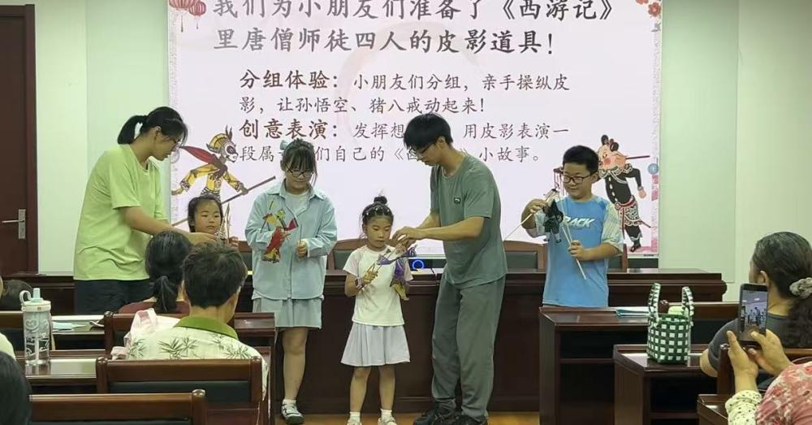
活动尾声，实践小队工作人员向参与家庭发放精美礼品。参与儿童依次上台展示手绘脸谱作品，分享活动感受。随后，实践小队全体成员与部分参与家庭代表，于雨花近华社区新时代文明实践站门前完成合影留念，本次戏曲非遗体验活动顺利结束。
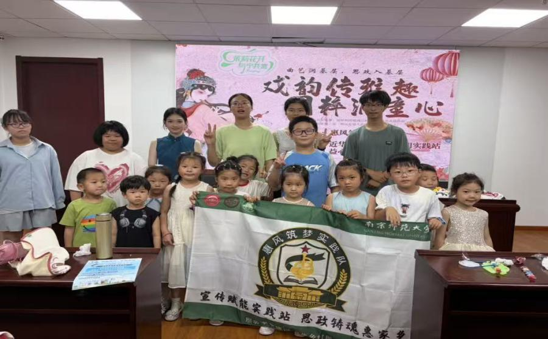
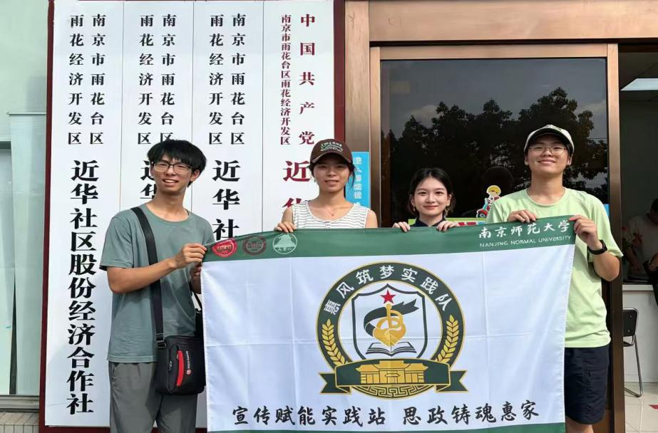